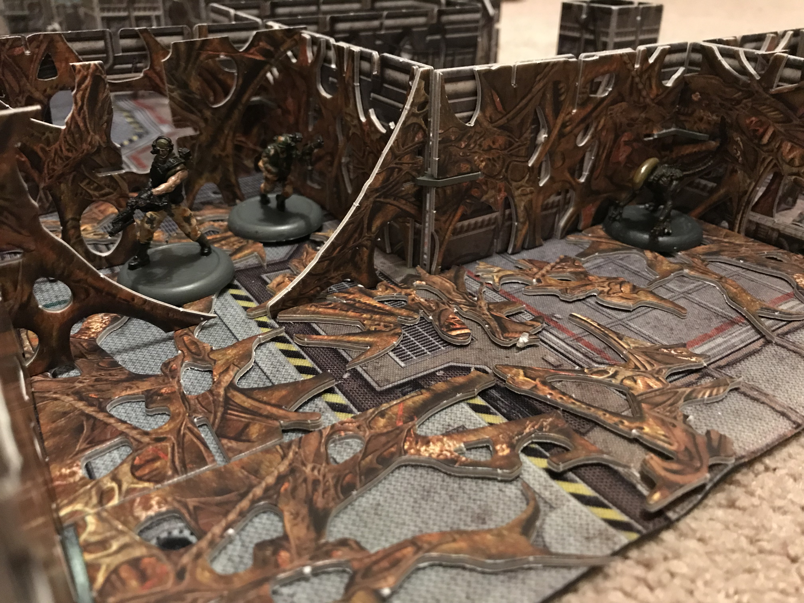
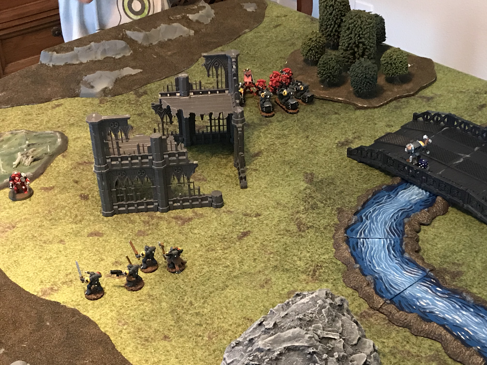

Board Game Guy Background
Hello, I am the boardgame guy and I wanted you to know why I go by boardgame guy. When I was a young,
I started off playing the normal games. Chutes and ladders, Break the Ice, and Uno (I know Uno is not a board
game but that is okay). Then one day, my father came home with a new game set far in a dark future where
Marines and aliens known as Genestelers fought in a Space Hulk! Which Space Hulk happened to be the name
of the game. From that time on my love for board games expanded. There was Hero Quest, Battle Masters, Silent
Death, and countless others. Playing games on the table was cemented.
When I hit my teen years, the revolution began as miniature tabletop games took root with Star Wars
Minatare Battles! Getting to play with large armies on a table with terrain you put together was exciting and
eye catching. Then the deep dive happened with entering the world of Warhammer 40,000 by Games Workshop. I
was able to buy, build, and paint model kits that represented futuristic soldiers, tanks, and skimmers. It
fleshed out my enjoyment of playing games on the tabletop. That leads to today where I play a mixture of both!
Everything from the new edition of Space Hulk, to Nemesis, to Gloom Haven, to Alien Vs Predator: The Hunt
Begins! I play these with my family and look forward to the next major game.

Links to my commonly used gaming sites!
- Games Workshop
- Games Workshop is a UK company that is big into miniature games. They are the ones that did Space Hulk,
Warhammer 40,000, and also do fantasy games like Lord of the Rings. On top of games and miniatures, they have
their own paint and terrain line.
 - Minature Market
- Miniature market is a resource I use a lot! They are buying site for games that are played on the table. Board games, mi nature games, and card games. They also have options for terrain and carrying cases to hold your miniature’s in. Best of all, they have upcoming games shown so you can see what might interest you in the future.
- Battle Systems
- Battle Systems is another UK company that made conservative priced terrain that is printed on cardboard.
It is a cheaper option than a lot of other terrain and it makes your battlespace look awesome! They have
terrain that is ancient, modern, and futuristic! They have even gone further with making their own game
called Core Space.

- Fantasy Flight Games
- Fantasy Flight Games is best known for their Star Wars games. These include Star Wars: X-wing, Star Wars: Armada, and Star Wars: Legion (which is very similar to the old Star Wars miniature Battles I played as a teen)! They have numerus games to choose from that can fit into many interests.